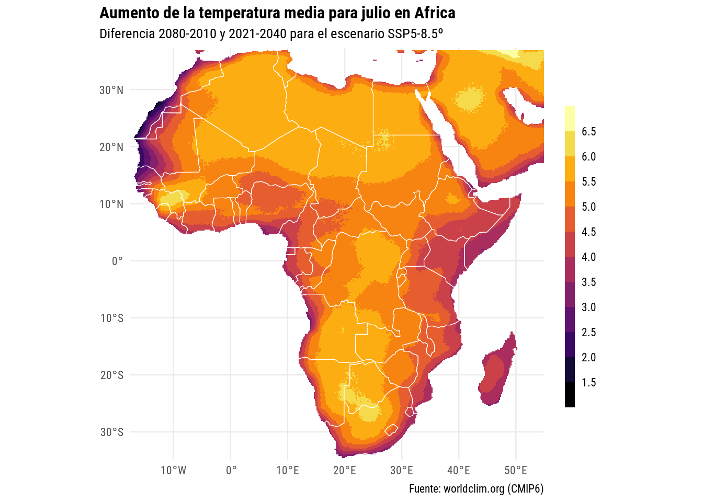

Hoy los datos vuelven a ser de Worldclim historical climate data, igual que para el día 6, me quedo con la temperatura máxima de julio para ver que tan mal se ve el verano para Africa a finales de siglo.
file1 <- "datos/wc2.1_10m_tmax_ACCESS-CM2_ssp585_2021-2040.tif"
if (!file.exists(file1)) {
download.file("https://geodata.ucdavis.edu/cmip6/10m/ACCESS-CM2/ssp585/wc2.1_10m_tmax_ACCESS-CM2_ssp585_2021-2040.tif",
destfile = file1)
}
file2 <- "datos/wc2.1_10m_tmax_ACCESS-CM2_ssp585_2081-2100.tif"
if (!file.exists(file2)) {
download.file("https://geodata.ucdavis.edu/cmip6/10m/ACCESS-CM2/ssp585/wc2.1_10m_tmax_ACCESS-CM2_ssp585_2081-2100.tif",
destfile = file2)
}
tmp1 <- raster(file1, band = 7)
tmp2 <- raster(file2, band = 7)
data <- data.table(rasterToPoints(tmp1))[data.table(rasterToPoints(tmp2)), on = c("x", "y")] %>%
.[, diff := i.tmax01 - tmax01]
mapa_africa <- rnaturalearth::ne_countries(continent = "Africa", returnclass = "sf",
scale = 110) |>
sf::st_make_valid()Si bien restar la estimación actual (2021-2040) con la estimación futura (2080-2100) no es del todo válido (debería haber buscado observaciones para determinar el periodo actual), nos da una idea de la que se nos viene si los gobiernos no hacen nada para reducir las emisiones de gases de efecto invernadero.
El escenario que elegí SSP5 8.5º es el más pesimista y espero que no lleguemos a eso.
data %>%
.[x %between% c(-20, 55) & y %between% c(-40, 37)] %>%
ggplot(aes(x, y)) +
geom_contour_fill(aes(z = diff, fill = after_stat(level))) +
geom_sf(data = mapa_africa, inherit.aes = FALSE, fill = NA, color = "white") +
scale_fill_viridis_d(option = "B", guide = guide_colorsteps(barwidth = 0.5,
barheight = 15)) +
coord_sf(expand = FALSE) +
labs(x = NULL, y = NULL, fill = NULL,
title = "Aumento de la temperatura media para julio en Africa",
subtitle = "Diferencia 2080-2010 y 2021-2040 para el escenario SSP5-8.5º",
caption = "Fuente: worldclim.org (CMIP6)") +
theme_minimal(base_size = 10,
base_family = "Roboto Condensed") +
theme(plot.title.position = "plot",
plot.title = element_text(face = "bold"))
# ggsave("day8.png", device = png, type = "cairo", bg = "white", width = 13, height = 13, units = "cm", dpi = 150)